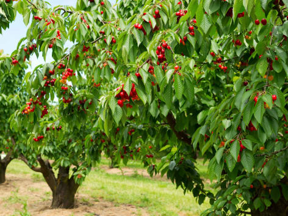

Ayuntamiento de Senés
JARDIN BOTANICO DE ESPECIES AUTOCTONAS DE SENES

Prunus avium

El cerezo (Prunus avium) es un árbol frutal caducifolio muy apreciado por sus frutos, las cerezas, y por su espectacular floración primaveral. Es una de las especies más valoradas tanto por su producción agrícola como por su valor ornamental.
Presenta un tronco recto con corteza lisa de tonos rojizos que se desprende en bandas horizontales. Su copa es amplia y ligeramente abierta. Las hojas son ovaladas, con borde dentado y de color verde brillante.
Durante la primavera, el cerezo se cubre de flores blancas agrupadas, creando un paisaje muy característico. Estas flores dan lugar a las cerezas, frutos carnosos de color rojo que maduran a finales de primavera o principios de verano.
El cerezo es originario de Europa y Asia occidental, y se cultiva ampliamente en regiones templadas. Prefiere climas frescos y suelos profundos y bien drenados.
En el entorno de Senés, su cultivo es más limitado que otros frutales debido a las condiciones climáticas, aunque puede encontrarse en zonas más favorables o en huertos bien cuidados.
Su presencia suele asociarse a áreas con mayor disponibilidad de agua y temperaturas más suaves.
Las cerezas son ricas en antioxidantes, vitaminas y compuestos beneficiosos para la salud. Tienen propiedades depurativas y antiinflamatorias, siendo muy valoradas en la alimentación saludable.
Su consumo es refrescante y energético, especialmente en los meses de calor.
Además, son utilizadas tanto en fresco como en productos elaborados, como mermeladas y repostería.
El cerezo simboliza la belleza efímera y el paso del tiempo, especialmente por su breve pero intensa floración.
También representa la renovación y la llegada de la primavera.
En Senés, el cerezo existía en los barrancos de la sierra, sobre todo los guindos que es una cereza pequeña que aquí se llamaban "cerezas chuleteras", se ha utilizado como fruta muy sabrosa
Respecto a las propiedades que se decía en senés que tenían, eran laxantes muy eficaz para el estreñimiento. Se utilizaban para el mal de piedra. La corteza se ha usado para la fiebre, como anticatarral y calmante. Los hipertensos deben tener precaución con esta frura.
También ha tenido valor ornamental por la belleza de su floración.
El cerezo florece en primavera, generalmente entre marzo y abril, y sus frutos maduran entre finales de primavera y comienzos del verano.
La floración del cerezo es un fenómeno cultural en muchos países, especialmente en Japón, donde simboliza la belleza de la naturaleza.
Existen numerosas variedades de cerezos, tanto ornamentales como productivas.
Su madera es apreciada en carpintería por su calidad y tonalidad.